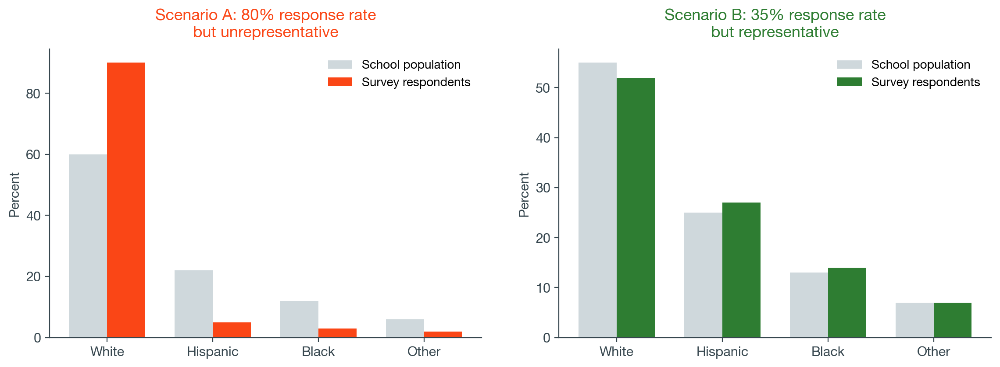
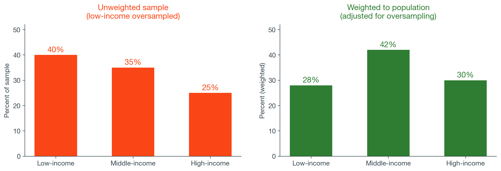

| Design | How it works | Education example | What it can tell you |
|---|---|---|---|
| Simple random | Everyone has an equal chance | Lottery for a program evaluation | Strongest generalization |
| Stratified | Divide into groups, sample within each | NAEP: oversample subgroups by race and ethnicity | Guarantees subgroup representation |
| Cluster | Sample groups, then individuals within them | ECLS-K: sample schools, then children | Efficient for large populations |
| Convenience | Whoever shows up or responds | Online parent survey, climate form | Describes who responded only |


svyset, [pw=]); we won’t use them, but you should know they exist.
regress readscr climate female poverty
------------------------------------------------------------
readscr | Coef. Std. Err. t P>|t| [95% CI]
-------------+----------------------------------------------
climate | 2.14 0.38 5.63 0.000 1.39 2.89
female | 1.87 0.60 3.12 0.002 0.70 3.05
poverty | -4.31 0.62 -6.95 0.000 -5.53 -3.09
_cons | 32.18 1.52 21.17 0.000 29.20 35.16
------------------------------------------------------------
N = 1,842 R-squared = 0.1237
climate
Next module: Error and Nested Data: what “error” means in regression, measurement error in test scores and survey items, and why students in the same school have correlated errors